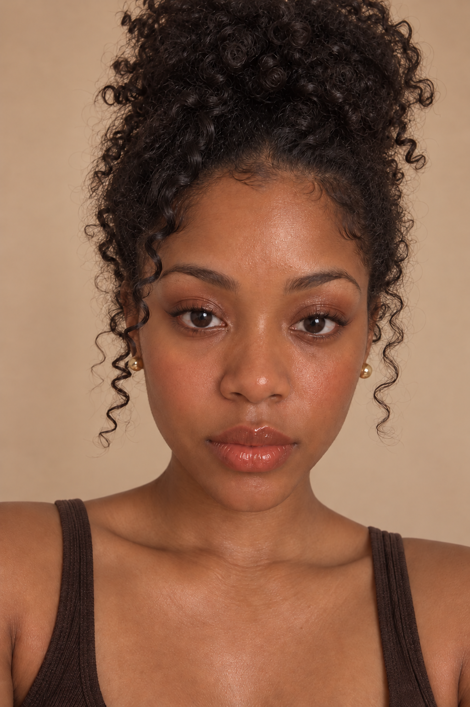

재드래곤
TOPIC · K-BEAUTY FOR GLOBAL CONSUMERS
muselook
Pick any idol makeup look. See it translated to your skin tone, on your face, with the K-beauty products that match.
FOR
US Gen Z K-beauty fans (13+), especially medium-to-deep skin tones.
PROBLEM
Idol product lists ignore skin tone. Fans can't swatch from overseas, and K-beauty shade ranges skew light, so they buy shades that look wrong on them.
"Brown skin foundations: Tirtir is the only option" (r/koreanskincare, 2025) · US is K-beauty's #1 export market, $2.19B in 2025, +15.1% (MFDS via Yonhap)
→
Muse look

My toneBase re-picked for deep warm skin: CLIO 21N → TIRTIR 45N